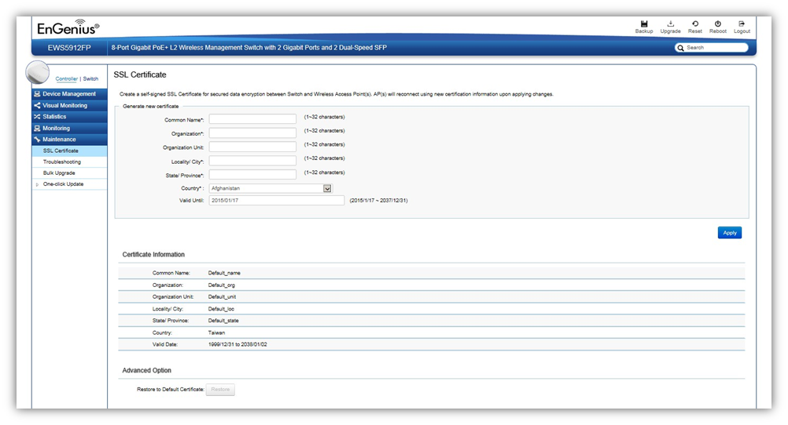

Maintenance > SSL Certificate
SSL certificates enables device or user identification, as well as secure communications. Administrators can create a self-signed SSL Certificate to secure communications between the Switch and Access Points. Note that Access Points will disconnect and reconnect using new certificate upon applying changes.

Generate New Certificate
Enter the information below to generate a request for an SSL certificate for the controller.
Common Name |
Enter the name of the request. |
Organization |
Enter the organizations name. |
Organization Unit |
Enter a unit name (department, etc.). |
Locality/City |
Enter the locality or city. |
State/Province |
Enter the state or province. |
Country |
Enter the name of the country. |
Valid Date |
Enter the expiry date of the certificate. |
Restore to Default Certificate
Click on Restore button under Advance Options to restore the default SSL Certificate settings.
Created with the Personal Edition of HelpNDoc: Easily create EBooks